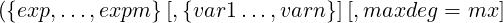
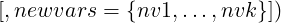
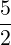
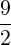
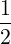
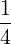
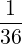
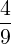
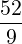

(e) = (e1,…,en) representing x1 ∗∗e1 x2 ∗∗e2  xn ∗∗en. xn ∗∗en. |
deg(e) is the sum over all elements of (e) |
(e) ≫ (l)⇔(e) − (l) ≫ (0) = (0,…,0) |
| Up | Next | Prev | PrevTail | Tail |
GROEBNER is a package for the computation of Gröbner Bases using the Buchberger algorithm and related methods for polynomial ideals and modules. It can be used over a variety of different coefficient domains, and for different variable and term orderings.
Gröbner Bases can be used for various purposes in commutative algebra, e.g. for elimination of variables, converting surd expressions to implicit polynomial form, computation of dimensions, solution of polynomial equation systems etc. The package is also used internally by the SOLVE operator.
Authors: Herbert Melenk, H.M. Möller and Winfried Neun.
Gröbner bases are a valuable tool for solving problems in connection with multivariate polynomials, such as solving systems of algebraic equations and analyzing polynomial ideals. For a definition of Gröbner bases, a survey of possible applications and further references, see [Buc85]. Examples are given in [BGK86], in [Buc88] and also in the test file for this package.
The GROEBNER package calculates Gröbner bases using the Buchberger algorithm. It can be used over a variety of different coefficient domains, and for different variable and term orderings.
The current version of the package uses parts of a previous version, written by R. Gebauer, A.C. Hearn, H. Kredel and H. M. Möller. The algorithms implemented in the current version are documented in [FGLM93], [GM88], [KW88] and [GMN+91]. The operator saturation has been implemented in July 2000 (Herbert Melenk).
The various functions of the GROEBNER package manipulate equations and/or polynomials; equations are internally transformed into polynomials by forming the difference of left-hand side and right-hand side, if equations are given.
All manipulations take place in a ring of polynomials in some variables x1,…,xn over a coefficient domain d:
| d[x1,…,xn], |
where d is a field or at least a ring without zero divisors. The set of variables x1,…,xn can be given explicitly by the user or it is extracted automatically from the input expressions.
All REDUCE kernels can play the role of “variables” in this context; examples are
The domain d is the current REDUCE domain with those kernels adjoined that are not members of the list of variables. So the elements of d may be complicated polynomials themselves over kernels not in the list of variables; if, however, the variables are extracted automatically from the input expressions, d is identical with the current REDUCE domain. It is useful to regard kernels not being members of the list of variables as “parameters”, e.g.
a * x + (a - b) * y**2
with “variables” {x,y}
and “parameters” a and b.
The exponents of GROEBNER variables must be positive integers.
A GROEBNER variable may not occur as a parameter (or part of a parameter) of a coefficient function. This condition is tested in the beginning of the GROEBNER calculation; if it is violated, an error message occurs (with the variable name), and the calculation is aborted. When the GROEBNER package is called by solve, the test is switched off internally.
The current version of the Buchberger algorithm has two internal modes, a field mode and a ring mode. In the starting phase the algorithm analyzes the domain type; if it recognizes d as being a ring it uses the ring mode, otherwise the field mode is needed. Normally field calculations occur only if all coefficients are numbers and if the current REDUCE domain is a field (e.g. rational numbers, modular numbers modulo a prime). In general, the ring mode is faster. When no specific REDUCE domain is selected, the ring mode is used, even if the input formulas contain fractional coefficients: they are multiplied by their common denominators so that they become integer polynomials. Zeroes of the denominators are included in the result list.
In the theory of Gröbner bases, the terms of polynomials are considered as ordered. Several order modes are available in the current package, including the basic modes:
lex, gradlex, revgradlex
All orderings are based on an ordering among the variables. For each pair of variables (a,b) an order relation must be defined, e.g. “a ≫ b”. The greater sign ≫ does not represent a numerical relation among the variables; it can be interpreted only in terms of formula representation: “a” will be placed in front of “b” or “a” is more complicated than “b”.
The sequence of variables constitutes this order base. So the notion of
| {x1,x2,x3} |
as a list of variables at the same time means
| x1 ≫ x2 ≫ x3 |
with respect to the term order.
If terms (products of powers of variables) are compared with lex, that term is chosen which has a greater variable or a higher degree if the greatest variable is the first in both. With gradlex the sum of all exponents (the total degree) is compared first, and if that does not lead to a decision, the lex method is taken for the final decision. The revgradlex method also compares the total degree first, but afterward it uses the lex method in the reverse direction; this is the method originally used by Buchberger.
| lex: | |||
| x ∗ y ∗∗3 | ≫ | y ∗∗48 | (heavier variable) |
| x ∗∗4 ∗ y ∗∗2 | ≫ | x ∗∗3 ∗ y ∗∗10 | (higher degree in 1st variable) |
| gradlex:
| |||
| y ∗∗3 ∗ z ∗∗4 | ≫ | x ∗∗3 ∗ y ∗∗3 | (higher total degree) |
| x ∗ z | ≫ | y ∗∗2 | (equal total degree) |
| revgradlex:
| |||
| y ∗∗3 ∗ z ∗∗4 | ≫ | x ∗∗3 ∗ y ∗∗3 | (higher total degree) |
| x ∗ z | ≪ | y ∗∗2 | (equal total degree, |
| so reverse order of lex) | |||
The formal description of the term order modes is similar to [Kre88]; this description regards only the exponents of a term, which are written as vectors of integers with 0 for exponents of a variable which does not occur:
|
| lex: | ||
| (e) > lex > (0) |  | ek > 0 and ej = 0 for j = 1,…,k − 1 |
| gradlex:
| ||
| (e) > gl > (0) |  | deg(e) > 0 or (e) > lex > (0) |
| revgradlex:
| ||
| (e) > rgl > (0) |  | deg(e) > 0 or (e) < lex < (0) |
Note that the lex ordering is identical to the standard REDUCE kernel ordering, when korder is set explicitly to the sequence of variables.
lex is the default term order mode in the GROEBNER package.
It is beyond the scope of this manual to discuss the functionality of the term order modes. See [Buc88].
The list of variables is declared as an optional parameter of the torder statement (see below). If this declaration is missing or if the empty list has been used, the variables are extracted from the expressions automatically and the REDUCE system order defines their sequence; this can be influenced by setting an explicit order via the korder statement.
The result of a Gröbner calculation is algebraically correct only with respect to the term order mode and the variable sequence which was in effect during the calculation. This is important if several calls to the GROEBNER package are done with the result of the first being the input of the second call. Therefore we recommend that you declare the variable list and the order mode explicitly. Once declared it remains valid until you enter a new torder statement. The operator gvars helps you extract the variables from a given set of polynomials, if an automatic reordering has been selected.
The Buchberger algorithm of the package is based on GEBAUER/MöLLER [GM88]. Extensions are documented in [MMN88] and [GMN+91].
The following command loads the package into REDUCE (this syntax may vary according to the implementation):
load_package groebner;
The package contains various operators, and switches for control over the reduction process. These are discussed in the following.
torder sets variable set and the term ordering mode. The default mode is lex. The previous description is returned as a list with corresponding elements. Such a list can alternatively be passed as sole argument to torder.
If the variable list is empty or if the torder declaration is omitted, the automatic variable extraction is activated.
gvars extracts from the expressions {exp1,exp2,…,expn} the kernels, which can play the role of variables for a Gröbner calculation. This can be used e.g. in a torder declaration.
GROEBNER calculates the Gröbner basis of the given set of expressions with respect to the current torder setting.
The Gröbner basis {1} means that the ideal generated by the input polynomials is the whole polynomial ring, or equivalently, that the input polynomials have no zeroes in common.
As a side effect, the sequence of variables is stored as a REDUCE list in the shared variable
gvarslast.
This is important if the variables are reordered because of optimization: you must set them afterwards explicitly as the current variable sequence if you want to use the Gröbner basis in the sequel, e.g. for a preduce call. A basis has the property “Gröbner” only with respect to the variable sequences which had been active during its computation.
This example used the default system variable ordering, which was {x,y}. With the other variable ordering, a different basis results:
Another basis yet again results with a different term ordering:
The operation of GROEBNER can be controlled by the following switches:
An explicitly declared dependency supersedes the variable optimization. For example
depend a, x, y;
guarantees that a will be placed in front of x and y. So groebopt can be used even in cases where elimination of variables is desired.
By default groebopt is off, conserving the original variable sequence.
The following switches control the print output of GROEBNER; by default all these switches are set off and nothing is printed.
The following operators can be used to compute the dimension and the independent variable sets of an ideal which has the Gröbner basis bas with arbitrary term order:
The switch groebopt plays no role in the algorithms gdimension and gindependent_sets. It is set off during the processing even if it is set on before. Its state is saved during the processing.
The “Kredel-Weispfenning” algorithm is used (see [KW88], extended to general ordering in [BWK93].


glexconvert converts a basis of a zero-dimensional ideal (finite number of isolated solutions) from arbitrary ordering into a basis under lex ordering. During the call of glexconvert the original ordering of the input basis must be still active!
newvars defines the new variable sequence. If omitted, the original variable sequence is used. If only a subset of variables is specified here, the partial ideal basis is evaluated. For the calculation of a univariate polynomial, new-vars should be a list with one element.
maxdeg is an upper limit for the degrees. The algorithm stops with an error message, if this limit is reached.
A warning occurs if the ideal is not zero dimensional.
glexconvert is an implementation of the FLGM algorithm by FAUGèRE, GIANNI, LAZARD and MORA [FGLM93]. Often, the calculation of a Gröbner basis with a graded ordering and subsequent conversion to lex is faster than a direct lex calculation. Additionally, glexconvert can be used to transform a lex basis into one with different variable sequence, and it supports the calculation of a univariate polynomial. If the latter exists, the algorithm is even applicable in the non zero-dimensional case, if such a polynomial exists. If the polynomial does not exist, the algorithm computes until maxdeg has been reached.
The algorithm groebner_walk convertes from an arbitrary polynomial system a graduated basis of the given variable sequence to a lex one of the same sequence. The job is done by computing a sequence of Gröbner bases of correspondig monomial ideals, lifting the original system each time. The algorithm has been described (more generally) by [AGK96a],[AGK96b],[AG98] and [CKM97]. groebner_walk should be only called if the direct calculation of a lex Gröbner base does not work. The computation of groebner_walk includes some overhead (e. g. the computation divides polynomials). Normally torder must be called before to define the variables and the variable sorting. The reordering of variables makes no sense with groebner_walk; so do not call groebner_walk with groebopt on!
If Gröbner bases are computed in order to solve systems of equations or to find the common roots of systems of polynomials, the factorizing version of the Buchberger algorithm can be used. The theoretical background is simple: if a polynomial p can be represented as a product of two (or more) polynomials, e.g. h = f ∗g, then h vanishes if and only if one of the factors vanishes. So if during the calculation of a Gröbner basis h of the above form is detected, the whole problem can be split into two (or more) disjoint branches. Each of the branches is simpler than the complete problem; this saves computing time and space. The result of this type of computation is a list of (partial) Gröbner bases; the solution set of the original problem is the union of the solutions of the partial problems, ignoring the multiplicity of an individual solution. If a branch results in a basis {1}, then there is no common zero, i.e. no additional solution for the original problem, contributed by this branch.
The syntax of groebnerf is the same as for groebner.
| groebnerf({exp1,exp2,…,expm}[,{},{nz1,…nzk}); |
where {exp1,exp2,…,expm} is a given list of expressions or equations, and {nz1,…nzk} is an optional list of polynomials known to be non-zero.
groebnerf tries to separate polynomials into individual factors and to branch the computation in a recursive manner (factorization tree). The result is a list of partial Gröbner bases. If no factorization can be found or if all branches but one lead to the trivial basis {1}, the result has only one basis; nevertheless it is a list of lists of polynomials. If no solution is found, the result will be {{1}}. Multiplicities (one factor with a higher power, the same partial basis twice) are deleted as early as possible in order to speed up the calculation. The factorizing is controlled by some switches.
As a side effect, the sequence of variables is stored as a REDUCE list in the shared variable
gvarslast .
If gltbasis is on, a corresponding list of leading term bases is also produced and is available in the variable gltb.
The third parameter of groebnerf allows one to declare some polynomials nonzero. If any of these is found in a branch of the calculation the branch is cancelled. This can be used to save a substantial amount of computing time. The second parameter must be included as an empty list if the third parameter is to be used.
It is obvious here that the solutions of the equations can be read off immediately.
All switches from groebner are valid for groebnerf as well:
| groebopt |
| gltbasis |
| groebfullreduction |
| groebstat |
| trgroeb |
| trgroebs |
| rgroeb1 |
By default trgroebr is off.
groebmonfacgroebresmaxgroebrestriction
These variables are described in the following paragraphs.
The factorization in groebnerf is controlled by the following switches and variables. The variable groebmonfac is connected to the handling of “monomial factors”. A monomial factor is a product of variable powers occurring as a factor, e.g. x ∗∗2 ∗ y in x ∗∗3 ∗ y − 2 ∗ x ∗∗2 ∗ y ∗∗2. A monomial factor represents a solution of the type “x = 0 or y = 0” with a certain multiplicity. With groebnerf the multiplicity of monomial factors is lowered to the value of the shared variable
groebmonfac
which by default is 1 (= monomial factors remain present, but their multiplicity is brought down). With
groebmonfac := 0
the monomial factors are suppressed completely.
groebresmax
controls the number of partial results. Its default value is 300. If groebresmax partial results are calculated, the calculation is terminated. groebresmax counts all branches, including those which are terminated (have been computed already), give no contribution to the result (partial basis 1), or which are unified in the result with other (partial) bases. So the resulting number may be much smaller. When the limit of groeresmax is reached, a warning
warning: GROEBRESMAX limit reached
is issued; this warning in any case has to be taken as a serious one. For “normal” calculations the groebresmax limit is not reached. var is a shared variable (with an integer value); it can be set in the algebraic mode to a different (positive integer) value.
In some applications only a subset of the complete solution set of a given set of equations is relevant, e.g. only nonnegative values or positive definite values for the variables. A significant amount of computing time can be saved if nonrelevant computation branches can be terminated early.
Positivity: If a polynomial has no (strictly) positive zero, then every system containing it has no nonnegative or strictly positive solution. Therefore, the Buchberger algorithm tests the coefficients of the polynomials for equal sign if requested. For example, in 13 ∗ x + 15 ∗ y ∗ z can be zero with real nonnegative values for x,y and z only if x = 0 and y = 0 or z = 0; this is a sort of “factorization by restriction”. A polynomial 13 ∗ x + 15 ∗ y ∗ z + 20 never can vanish with nonnegative real variable values.
Zero point: If any polynomial in an ideal has an absolute term, the ideal cannot have the origin point as a common solution.
By setting the shared variable
groebrestriction
groebnerf is informed of the type of restriction the user wants to impose on the solutions:
| groebrestiction:=nonnegative; |
| only nonnegative real solutions are of interest |
| groebrestriction:=positive; |
| only nonnegative and nonzero solutions are of interest |
| groebrestriction:=zeropoint; |
| only solution sets which contain the point {0,0,…,0} are or interest. |
If groebnerf detects a polynomial which formally conflicts with the restriction, it either splits the calculation into separate branches, or, if a violation of the restriction is determined, it cancels the actual calculation branch.
Reduction of a polynomial “p” modulo a given sets of polynomials “b” is done by the reduction algorithm incorporated in the Buchberger algorithm. Informally it can be described for polynomials over a field as follows:
| loop1: % head term elimination |
| if there is one polynomial b in B such that the leading |
| term of p is a multiple of the leading term of P do |
| p := p − lt(p)∕lt(b) ∗ b (the leading term vanishes) |
| do this loop as long as possible; |
| loop2: % elimination of subsequent terms |
| for each term s in p do |
| if there is one polynomial b in B such that s is a |
| multiple of the leading term of p do |
| p := p − s∕lt(b) ∗ b (the term s vanishes) |
| do this loop as long as possible; |
If the coefficients are taken from a ring without zero divisors we cannot divide by each possible number like in the field case. But using that in the field case, c∗p is reduced to c∗q, if p is reduced to q, for arbitrary numbers c, the reduction for the ring case uses the least c which makes the (field) reduction for c∗p integer. The result of this reduction is returned as (ring) reduction of p eventually after removing the content, i.e. the greatest common divisor of the coefficients. The result of this type of reduction is also called a pseudo reduction of p.
| greduce(exp,{exp1,exp2,…,expm}]); |
where exp is an expression, and {exp1,exp2,…,expm} is a list of any number of expressions or equations.
greduce first converts the list of expressions {exp1,…,expn} to a Gröbner basis, and then reduces the given expression modulo that basis. An error results if the list of expressions is inconsistent. The returned value is an expression representing the reduced polynomial. As a side effect, greduce sets the variable gvarslast in the same manner as groebner does.
| preduce(exp,{exp1,exp2,…,expm}); |
where expm is an expression, and {exp1,exp2,…,expm} is a list of any number of expressions or equations.
preduce reduces the given expression modulo the set {exp1,…,expm}. If this set is a Gröbner basis, the obtained reduced expression is uniquely determined. If not, then it depends on the subsequence of the single reduction steps (see 2). preduce does not check whether {exp1,exp2,…,expm} is a Gröbner basis in the actual order. Therefore, if the expressions are a Gröbner basis calculated earlier with a variable sequence given explicitly or modified by optimization, the proper variable sequence and term order must be activated first.
Example 3(preduce called with a Gröbner basis):
The shortest polynomial with different polynomial term orders is computed with the operator greduce_orders:
The expression exp is reduced by greduce with the orders in the shared variable gorders, which must be a list of term orders (if set). By default it is set to
{revgradlex, gradlex, lex}
The shortest polynomial is the result. The order with the shortest polynomial is set to the shared variable gorder. A Gröbner basis of the system {exp1, exp2, …, expm} is computed for each element of orders. With the default setting gorders in most cases will be set to revgradlex. If the variable set is given, these variables are taken; otherwise all variables of the system {exp1, exp2, …, expm} are extracted.
The Gröbner basis computations can take some time; if interrupted, the intermediate result of the reduction is set to the shared variable greduce_result, if one is done already. However, this is not nesessarily the minimal form.
If the variable gorders should be set to orders with a parameter, the term oder has to be replaced by a list; the first element is the term oder selected, followed by its parameter(s), e.g.
orders := {{gradlexgradlex, 2}, {lexgradlex, 2}}
In some case not only are the results produced by greduce and preduce of interest, but the reduction process is of some value too. If the switch
groebprot
is set on, groebner, greduce and preduce produce as a side effect a trace of their work as a REDUCE list of equations in the shared variable
groebprotfile.
Its value is a list of equations with a variable “candidate” playing the role of the object to be reduced. The polynomials are cited as “poly1”, “poly2”, …. If read as assignments, these equations form a program which leads from the reduction input to its result. Note that, due to the pseudo reduction with a ring as the coefficient domain, the input coefficients may be changed by global factors.
|
16(5y2 + 2x2y +  xy + y + 8x2 + y + 8x2 +  x − x − ) = |
| (−8xy − 32x − 2y3 − 3y2 + 13y + 6)poly1 |
| + (−2y2 − 2y + 6)poly2 + y2. |
Given a set of polynomials {f1,…,fk} and their Gröbner basis {g1,…,gl}, it is well known that there are matrices of polynomials Cij and Dji such that
| fi = ∑ jCijgj and gj = ∑ iDjifi |
and these relations are needed explicitly sometimes. In BUCHBERGER [Buc85], such cases are described in the context of linear polynomial equations. The standard technique for computing the above formulae is to perform Gröbner reductions, keeping track of the computation in terms of the input data. In the current package such calculations are performed with (an internally hidden) cofactor technique: the user has to assign unique names to the input expressions and the arithmetic combinations are done with the expressions and with their names simultaneously. So the result is accompanied by an expression which relates it algebraically to the input values.
There are two complementary operators with this feature: groebnert and preducet; functionally they correspond to groebner and preduce. However, the sets of expressions here must be equations with unique single identifiers on their left side and the lhs are interpreted as names of the expressions. Their results are sets of equations (groebnert) or equations (preducet), where a lhs is the computed value, while the rhs is its equivalent in terms of the input names.
We calculate the Gröbner basis for an ellipse (named “p1” ) and a line (named “p2” ); p2 is member of the basis immediately and so the corresponding first result element is of a very simple form; the second member is a combination of p1 and p2 as shown on the rhs of this equation:
We want to reduce the polynomial x**2 wrt the above Gröbner basis and need knowledge about the reduction formula. We therefore extract the basis polynomials from gb1, assign unique names to them (here g1, g2) and call preducet. The polynomial to be reduced here is introduced with the name Q, which then appears on the rhs of the result. If the name for the polynomial is omitted, its formal value is used on the right side too.
This output means
|
x2 = (  x + y − )g1 + )g1 +  g2 + (− y + ). |
If we reduce a polynomial which is member of the ideal, we consequently get a result with lhs zero:
This means
q = (x +  y − y − )g1 + )g1 +  g2. g2.
|
With these operators the matrices Cij and Dji are available implicitly, Dji as side effect of groebnert, cij by calls of preducet of fi wrt {gj}. The latter by definition will have the lhs zero and a rhs with linear fi.
If {1} is the Gröbner basis, the groebnert calculation gives a “proof”, showing, how 1 can be computed as combination of the input polynomials.
Remark: Compared to the non-tracing algorithms, these operators are much more time consuming. So they are applicable only on small sized problems.
Given a polynomial ring, e.g. r = z[x1 xk] and an integer n > 1: the vectors with n
elements of r form a module under vector addition (= componentwise addition) and
multiplication with elements of r. For a submodule given by a finite basis a Gröbner
basis can be computed, and the facilities of the GROEBNER package can be used except
the operators groebnerf and groesolve.
xk] and an integer n > 1: the vectors with n
elements of r form a module under vector addition (= componentwise addition) and
multiplication with elements of r. For a submodule given by a finite basis a Gröbner
basis can be computed, and the facilities of the GROEBNER package can be used except
the operators groebnerf and groesolve.
The vectors are encoded using auxiliary variables which represent the unit vectors in the module. E.g. using v1,v2,v3 the module element [x12,0,x1 − x2] is represented as x12v1 + x1v3 − x2v3. The use of v1,v2,v3 as unit vectors is set up by assigning the set of auxiliary variables to the shared variable gmodule, e.g.
After this declaration all monomials built from these variables are considered as an algebraically independent basis of a vector space. However, you had best use them only linearly. Once gmodule has been set, the auxiliary variables automatically will be added to the end of each variable list (if they are not yet member there). Example:
In many cases a total degree oriented term order will be adequate for computations in modules, e.g. for all cases where the submodule membership is investigated. However, arranging the auxiliary variables in an elimination oriented term order can give interesting results. E.g.
Here two polynomials are entered as vectors [p1,1,0] and [p2,0,1]. Using a term ordering such that the first dimension ranges highest and the other components lowest, a classical cofactor computation is executed just as in the extended Euclidean algorithm. Consequently the leading polynomial in the resulting basis shows the greatest common divisor of p1 and p2, found as a coefficient of v1 while the coefficients of v2 and v3 are the cofactors c1 and c2 of the polynomials p1 and p2 with the relation gcd(p1,p2) = c1p1 + c2p2.
Besides the basic orderings, there are ordering options that are used for special purposes.
It is often desirable to separate variables and formal parameters in a system of polynomials. This can be done with a lex Gröbner basis. That however may be hard to compute as it does more separation than necessary. The following orderings group the variables into two (or more) sets, where inside each set a classical ordering acts, while the sets are handled via their total degrees, which are compared in elimination style. So the Gröbner basis will eliminate the members of the first set, if algebraically possible. torder here gets an additional parameter which describe the grouping
| torder (vl, gradlexgradlex, n) |
| torder (vl, gradlexrevgradlex,n) |
| torder (vl, lexgradlex, n) |
| torder (vl, lexrevgradlex, n) |
Here the integer n is the number of variables in the first group and the names combine the local ordering for the first and second group, e.g.
| lexgradlex, 3 for {x1,x2,x3,x4,x5}:
| |||
| x1i1…x5i5 ≫ x1j1…x5j5
| |||
| if | (i1,i2,i3) ≫lex(j1,j2,j3) | ||
| or | (i1,i2,i3) = (j1,j2,j3) | ||
| and | (i4,i5) ≫gradlex(j4,j5) | ||
Note that in the second place there is no lex ordering available; that would not make sense.
The statement
torder(vl, weighted, {n1,n2,n3…});
establishes a graduated ordering, where the exponents are first multiplied by the given weights. If there are less weight values than variables, the weight 1 is added automatically. If the weighted degree calculation is not decidable, a lex comparison follows.
The statement
torder(vl, graded, {n1,n2,n3…}, order2);
establishes a graduated ordering, where the exponents are first multiplied by the given weights. If there are less weight values than variables, the weight 1 is added automatically. If the weighted degree calculation is not decidable, the term order order2 specified in the following argument(s) is used. The ordering graded is designed primarily for use with the operator dd_groebner.
The statement
torder(vl, matrix, m);
where m is a matrix with integer elements and row length which corresponds to the variable number. The exponents of each monomial form a vector; two monomials are compared by multiplying their exponent vectors first with m and comparing the resulting vector lexicographically. E.g. the unit matrix establishes the classical lex term order mode, a matrix with a first row of ones followed by the rows of a unit matrix corresponds to the gradlex ordering.
The matrix m must have at least as many rows as columns; a non–square matrix contains redundant rows. The matrix must have full rank, and the top non–zero element of each column must be positive.
The generality of the matrix based term order has its price: the computing time spent in the term sorting is significantly higher than with the specialized term orders. To overcome this problem, you can compile a matrix term order ; the compilation reduces the computing time overhead significantly. If you set the switch comp on, any new order matrix is compiled when any operator of the GROEBNER package accesses it for the first time. Alternatively you can compile a matrix explicitly
where < n > is a name (an identifier) and < m > is a term order matrix. torder_compile transforms the matrix into a LISP program, which is compiled by the LISP compiler when comp is on or when you generate a fast loadable module. Later you can activate the new term order by using the name < n > in a torder statement as term ordering mode.
For a homogeneous system of polynomials under a term order graded, gradlex, revgradlex or weighted a Gröbner Base can be computed with limiting the grade of the intermediate s–polynomials:
where d1 is a non–negative integer and d2 is an integer > d1 or “infinity". A pair of polynomials is considered only if the grade of the lcm of their head terms is between d1 and d2. See [BWK93] for the mathematical background. For the term orders graded or weighted the (first) weight vector is used for the grade computation. Otherwise the total degree of a term is used.
Based on the elementary Gröbner operations, the GROEBNER package offers additional operators, which allow the decomposition of an ideal or of a system of equations down to the individual solutions.
The groesolve operator incorporates a macro algorithm; lexical Gröbner bases are computed by groebnerf and decomposed into simpler ones by ideal decomposition techniques; if algebraically possible, the problem is reduced to univariate polynomials which are solved by solve; if rounded is on, numerical approximations are computed for the roots of the univariate polynomials.
| groesolve({exp1,exp2,…,expm}[,{var1,var2,…,varn}]); |
where {exp1,exp2,…,expm} is a list of any number of expressions or equations, {var1,var2,…,varn} is an optional list of variables.
The result is a set of subsets. The subsets contain the solutions of the polynomial equations. If there are only finitely many solutions, then each subset is a set of expressions of triangular type {exp1,exp2,…,expn}, where exp1 depends only on var1, exp2 depends only on var1 and var2 etc. until expn which depends on var1,…,varn. This allows a successive determination of the solution components. If there are infinitely many solutions, some subsets consist in less than n expressions. By considering some of the variables as “free parameters”, these subsets are usually again of triangular type.
Example 8(Intersubsections of a line with a circle):
| groesolve({x ∗∗2 − y ∗∗2 − a,p ∗ x + q ∗ y + s},{x,y}); |
If the system is zero–dimensional (has a number of isolated solutions), the algorithm described in [Hil99] is used, if the decomposition leaves a polynomial with mixed leading term. Hillebrand has written the article and Möller was the tutor of this job.
The reordering of the groesolve variables is controlled by the REDUCE switch varopt. If varopt is on (which is the default of varopt), the variable sequence is optimized (the variables are reordered). If varopt is off, the given variable sequence is taken (if no variables are given, the order of the REDUCE system is taken instead). In general, the reordering of the variables makes the Gröbner basis computation significantly faster. A variable dependency, declare by one (or several) depend statements, is regarded (if varopt is on). The switch groebopt has no meaning for groesolve; it is stored during its processing.
In many cases, it is difficult to do the general Gröbner processing. If a Gröbner basis with a lex ordering is calculated already (e.g., by very individual parameter settings), the solutions can be derived from it by a call to groepostproc. groesolve is functionally equivalent to a call to groebnerf and subsequent calls to groepostproc for each partial basis.
| groepostproc({exp1,exp2,…,expm}[,{var1,var2,…,varn}]); |
where {exp1,exp2,…,expm} is a list of any number of expressions, {var1,var2,…,varn} is an optional list of variables. The expressions must be a lex Gröbner basis with the given variables; the ordering must be still active.
The result is the same as with groesolve.
Let i be an ideal and f be a polynomial in the same variables. Then the algebraic quotient is defined by
| i : f = {p|p ∗ f member of i}. |
The ideal quotient i : f contains i and is obviously part of the whole polynomial ring, i.e. contained in {1}. The case i : f = {1} is equivalent to f being a member of i. The other extremal case, i : f = i, occurs, when f does not vanish at any general zero of i. The explanation of the notion “general zero” introduced by van der Waerden, however, is beyond the aim of this manual. The operation of groesolve/groepostproc is based on nested ideal quotient calculations.
If i is given by a basis and f is given as an expression, the quotient can be calculated by
where {⟨exp1⟩, ⟨exp2⟩, …, ⟨expm⟩} is a list of any number of expressions or equations, ⟨exp⟩ is a single expression or equation.
idealquotient calculates the algebraic quotient of the ideal i with the basis {exp1,exp2,…,expm} and exp with respect to the variables given or extracted. {exp1,exp2,…,expm} is not necessarily a Gröbner basis. The result is the Gröbner basis of the quotient.
The saturation operator computes the quotient on an ideal and an arbitrary power of an expression exp ∗∗n with arbitrary n. The call is
| saturation({exp1,…,expm},exp); |
where {exp1,exp2,…,expm} is a list of any number of expressions or equations, exp is a single expression or equation.
saturation calls idealquotient several times, until the result is stable, and returns it.
In some cases where no Gröbner basis with lexical ordering can be calculated, a calculation with a total degree ordering is still possible. Then the Hilbert polynomial gives information about the dimension of the solutions space and for finite sets of solutions univariate polynomials can be calculated. The solutions of the equation system then is contained in the cross product of all solutions of all univariate polynomials.
This algorithm was contributed by JOACHIM HOLLMAN, Royal Institute of Technology, Stockholm (private communication).
where {exp1,…,expm} is a list of any number of expressions or equations.
hilertpolynomial calculates the Hilbert polynomial of the ideal with basis {exp1,…,expm} with respect to the variables given or extracted provided the given term ordering is compatible with the degree, such as the gradlex- or revgradlex-ordering. The term ordering of the basis must be active and {exp1,…,expm} should be a Gröbner basis with respect to this ordering. The Hilbert polynomial gives information about the cardinality of solutions of the system {exp1,…,expm}: if the Hilbert polynomial is an integer, the system has only a discrete set of solutions and the polynomial is identical with the number of solutions counted with their multiplicities. Otherwise the degree of the Hilbert polynomial is the dimension of the solution space.
If the Hilbert polynomial is not a constant, it is constructed with the variable “x” regardless of whether x is member of {var1,…,varn} or not. The value of this polynomial at sufficiently large numbers “x” is the difference of the dimension of the linear vector space of all polynomials of degree ≤ x minus the dimension of the subspace of all polynomials of degree ≤ x which belong also to the ideal.
x must be an undefined variable or the value of x must be an undefined variable; otherwise a warning is given and a new (generated) variable is taken instead.
Remark: The number of zeros in an ideal and the Hilbert polynomial depend only on the leading terms of the Gröbner basis. So if a subsequent Hilbert calculation is planned, the Gröbner calculation should be performed with on gltbasis and the value of gltb (or its elements in a groebnerf context) should be given to hilbertpolynomial. In this manner, a lot of computing time can be saved in the case of long calculations.
The following operators support explicit calculations with polynomials in a distributive representation at the REDUCE top level. So they allow one to do Gröbner type evaluations stepwise by separate calls. Note that the normal REDUCE arithmetic can be used for arithmetic combinations of monomials and polynomials.
where ⟨p⟩ is a polynomial or a list of polynomials.
If ⟨p⟩ is a single polynomial, the result is a reordered version of ⟨p⟩ in the distributive representation according to the variables and the current term order mode; if ⟨p⟩ is a list, its members are converted into distributive representation and the result is the list sorted by the term ordering of the leading terms; zero polynomials are eliminated from the result.
where ⟨p⟩ is a polynomial.
gsplit converts the polynomial ⟨p⟩ into distributive representation and splits it into leading monomial and reductum. The result is a list with two elements, the leading monomial and the reductum.
where ⟨p1⟩ and ⟨p2⟩ are polynomials.
gspoly calculates the s-polynomial from ⟨p1⟩ and ⟨p2⟩.
Example for a complete calculation (taken from DAVENPORT ET AL. [DST93]):
| Up | Next | Prev | PrevTail | Front |